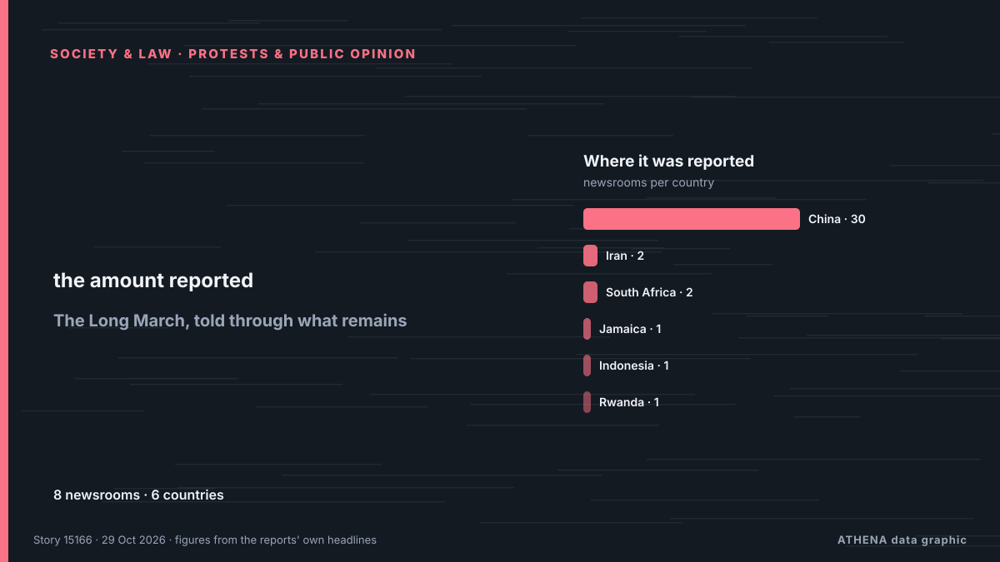

The Long March, told through what remains

A village's story of change: From the Long March to today. von CGTN (China)
Unabhängig gemeldet von 8 Medien in 6 Ländern seit dem 19. Okt., zuerst von People's Daily English — page reader; die Berichterstattung flaut ab. ATHENA findet in der Berichterstattung keine Risikoindikatoren. Die Konfidenz liegt bei 83 % (hoch): 8 Medien bestätigen es unabhängig, bei einer mittleren Verlässlichkeit der Quellen von 73 %.
Warum es wichtig ist: Rechtliche und politische Änderungen verändern Rechte, Pflichten und öffentliche Leistungen für die Betroffenen.
Was sich geändert hat: 2 neue Berichte von 2 Redaktionen in den 24 Stunden bis 29. Okt..
Schlagzeilen werden auf Englisch angezeigt, wie veröffentlicht.
Auf einen Blick
Ausgewählt, bewertet und geschrieben nach der veröffentlichten Methodik von ATHENA. Kein Redakteur greift in einzelne Ereignisse ein. So entsteht ATHENA ›
| 19 Oct 15:52 UTC | 1 |
|---|---|
| 20 Oct 03:52 UTC | 2 |
| 20 Oct 15:52 UTC | 0 |
| 21 Oct 03:52 UTC | 6 |
| 21 Oct 15:52 UTC | 0 |
| 22 Oct 03:52 UTC | 9 |
| 22 Oct 15:52 UTC | 0 |
| 23 Oct 03:52 UTC | 4 |
| 23 Oct 15:52 UTC | 0 |
| 24 Oct 03:52 UTC | 5 |
| 24 Oct 15:52 UTC | 0 |
| 25 Oct 03:52 UTC | 2 |
| 25 Oct 15:52 UTC | 0 |
| 26 Oct 03:52 UTC | 1 |
| 26 Oct 15:52 UTC | 0 |
| 27 Oct 03:52 UTC | 1 |
| 27 Oct 15:52 UTC | 0 |
| 28 Oct 03:52 UTC | 0 |
| 28 Oct 15:52 UTC | 1 |
| 29 Oct 03:52 UTC | 1 |
Warum diese Zahlen
Bedeutung
Risiko
Konfidenz
Die Berichterstattung – wer berichtete, und wann
Schlagzeile wie veröffentlicht · öffnet das Original- People's Daily English — page reader · ChinaA high-speed railway traces the legacy of the Long March
- CGTN (China) · ChinaA village's story of change: From the Long March to today
- CGTN (China) · ChinaHow ethnic minorities helped the Red Army on the Long March？
- Jamaica Observer · Jamaika · JamaicaA long way to go
- CGTN (China) · ChinaChina protects Long March legacy with high-tech and patriotic classes
- CGTN (China) · ChinaThe Long March, told through what remains
- CGTN (China) · ChinaQ&A: How the Long March shapes the CPC and China's modernization today
- Mehr News (English) · IranEnduring Long March spirit boosts China rejuvenation drive
- CGTN (China) · ChinaA School Born of the Long March's Victory
- People's Daily English — page reader · ChinaChina's Long March legacy endures from trek to tech
- Xinhua (English) — page reader · China90 years on, China's Long March legacy still resonates
- Xinhua (English) — page reader · ChinaTwo bridges, 90 years apart: Long March spirit marches on
- Xinhua (English) — page reader · China"Everlasting" Long March a secret to China's development miracle: Armenian expert
- People's Daily English — page reader · ChinaLong March spirit sails on in China's modern navy
- CGTN (China) · ChinaA Long March of her own: Growing roses at Jiajin Mountain
- CGTN (World) · ChinaIf Long March veterans could write to us today…
- CGTN (China) · ChinaWhat does 'Half a Quilt' tell us about China's new Long March?
- People's Daily English — page reader · ChinaThrough the eyes of international friends: What Long March means today
- Antara (English) · Indonesien · IndonesiaTwo German writers retrace the Long March by bicycle
- CGTN (China) · ChinaInternational youths' reflections along a Long March route
- CGTN (China) · ChinaFrom Long March to Chinese modernization: China's new journey forward
- IOL · Südafrika · South AfricaXi Jinping calls for new achievements on new Long March
- IOL · Südafrika · South AfricaThe Long March at 90: A Legacy of Resilience and Determination
- KT Press · Ruanda · RwandaThe Long March: How This Has Defined China and Rwanda Today
- Xinhua (English) — page reader · ChinaChina's Long March legacy through Turkish eyes
- Mehr News (English) · IranChina's Long March legacy through Turkish eyes
- Xinhua (English) — page reader · ChinaRetracing an odyssey: Why people walk China's Long March 90 years later
- CGTN (China) · ChinaDiplomats: this Long March exhibition is inspiring
- Xinhua (English) — page reader · ChinaMy Long March | Giving visitors more reasons to visit where it all began
- Xinhua (English) — page reader · ChinaMy Long March | Her English skills are opening doors for farmers
- People's Daily English — page reader · ChinaForge ahead on new Long March: Contributing more to human progress